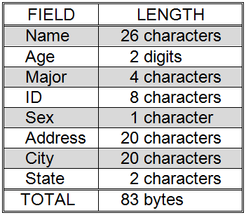
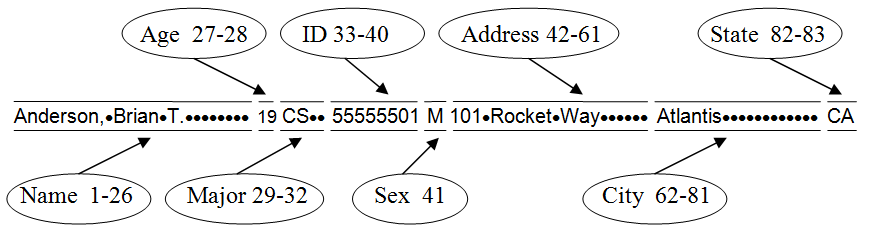

Imagine the difficulty of trying to keep up with a large amount of information if you, the end-user, had to remember the track and sector location of every item stored on a disk. For example, if we wanted to keep up with the student records for a university, we would probably have to write down the track and sector of every student’s record. Such a system would be hardly better than keeping the records on paper. Common tasks, such as finding all of the students majoring in Computer Science, would be near impossible, essentially requiring a person to retrieve every student record in the entire system in order to determine who was majoring in what field. Such a system would obviously be unacceptable to most people.
Computer scientists and engineers have solved this problem by constructing levels of software that reside between the end-user and the disk drive controller. These levels of software hide the low-level details of where information is physically located on the disk enabling data to be organized and accessed in more meaningful ways.
The fields of a student record
Three useful concepts for organizing logically related data are: files, records, and fields. A record is a collection of information about an individual person, object, or thing – for example an employee record for John Dough, or a student record for Suzy Queue. Records are usually composed of a group of fields, where a field is a single item of information, such as a name, age, or address. A file is a collection of logically related records. So, for example, we speak of the student information file, or the employee file.
Being able to refer to data using these logical groupings is much more convenient than being forced to think in terms of tracks and sectors, but how are these concepts actually implemented? Typically, all of the fields that make up a record are placed in a fixed order and stored in physically adjacent locations. In other words, all of the parts of a record, (e.g., name, age, major, etc.) are stored next to one another. illustrates one possibility for organizing student records. These records consist of eight fields that occur in the order: name, age, major, ID, sex, address, city, and state. The number of characters (bytes) required to represent each field is given in the figure. The total length of a student record corresponding to this organization will be 83 bytes. An actual record that follows this organization is shown in . The title of each field, and its position in the 83-character-long record, is indicated. Since “spaces” are real characters that must be stored in the record, they are represented in using the • symbol.
An example of a student record
As previously stated, files are collections of records. Just as the fields of a record are arranged in some order, the individual records that make up a file are also generally arranged in some logical order – such as alphabetically by student name.
Data files come in all sizes, from very large to very small. Furthermore, the size of the records in one file may be quite different from the size of the records in another file. Disk drives, on the other hand, read date from and write data to equal-sized sectors. Given these facts, the question that naturally arises is how can the file concept be mapped to the physical tracks and sectors of disk drives.
To being with, since disk sectors tend to be much larger than individual records, groups of records are joined together into blocks, which are read from, and written to, disk as a unit. In order to minimize the amount of wasted space on a disk, record blocks are constructed to be as close as possible to disk sector size.
For example, if the sectors of a disk were designed to hold 1,024 bytes (characters) and our student file consisted of records that were each 83 bytes long, 12 records could be stored per block. These blocks would then be 996 bytes long (12 X 83), meaning that 28 bytes per sector (1,024 – 996) would be wasted. The amount of wasted space per sector varies depending on record and sector size. In general, the amount of wasted space per sector will be about one half the size of a single record.
So, the records of a file are grouped together into blocks, which are about the size of a sector. If the file is relatively small, all of its records might fit within a single disk sector. It is more often the case that many sectors will be required to hold an entire file. When this happens, we are faced with the problem of deciding which disk sectors should be devoted to holding the file and in what order they should be thought of as occurring.
There are three common approaches to storing multi-sector files on disk drives: contiguous storage, linked storage, and indexed storage.